Overview
For the purpose of shortening this tutorial, it is assumed that your character has animations and is set up properly, with a T-pose animation and any other animations you want it to have.
Prerequisites
- Install the ceMaxUtils plugin by downloading it from the Asset Database and dragging & dropping the file ceMaxUtils.mzp into the 3ds Max viewport and choosing Install ceMaxutils.
Importing and Setting Up a T-Pose Character as an Origin File
This needs to be done first, to make it easier to add multiple animations to your character and to make it possible to reorient multiple animations in batches (see below).
- Import your T-posed character into 3ds Max (File → Import → Import...)
- After selecting your T-posed character, the FBX Import window will open.
- In this FBX Import window, under Include → File Content: choose Add.
- Also under Include, make sure Animation is selected. Click OK to import your character and close the FBX Import window.
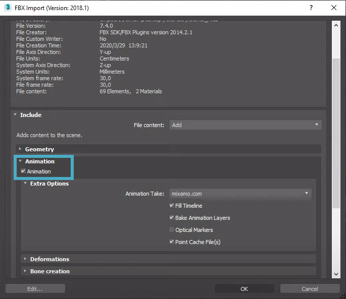
Animation selected - Go to ceMaxUtils → Animation => → CAT Utilities.
- In the new menu that pops up, click on Anim:
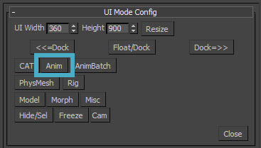
Anim button - Reorient the skin by telling the plugin which meshes need to be reoriented. To do this, click Auto Collect. The plugin will then also recognize the hip bone.
- For CRYENGINE, the Z-axis needs to be rotated by 180 degrees, which is already set by default under World Z rotate.
If you select the character in the viewport, you'll see from the gizmo that it's facing in the negative Y-axis direction:
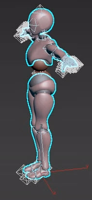
Negative Y-axis direction
This will need to change for the character to work properly in CRYENGINE.
To do this, click on the Reorient skinned character mesh (parts) button: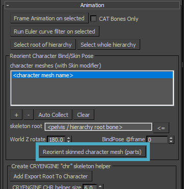
Reorient skinned character mesh (parts) buttonThis may take up to a few minutes.
We need a root bone, and a root bone is always created from the skin mesh. To create one, click on the body skin file in the Outliner:
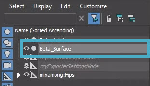
Body skin file selected- Click on the Add Export Root To Character button in the ceMaxUtils → Animation panel.
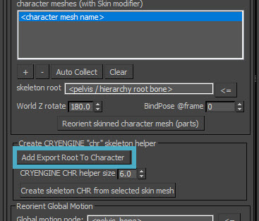
Add export Root to Character button A new bone will appear underneath your character:
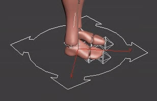
New bone under character
And at the top of the hierarchy: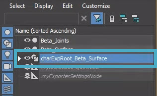
New bone at top of hierarchyYou can rename this if you want, the name does not have to be what the plugin assigns to it.
Create a skeleton .chr file by selecting the skin mesh (important, as after the previous step, the root bone will probably still be selected!) and clicking Create skeleton CHR from selected skin mesh.
- Save As a 3ds Max (*.max) file.
Adding Animations on Top of the T-pose Character
Now that you have an origin file, you can easily add animations to it.
- Import an animation by clicking File → Import → Import....
- Choose a motion animation and click Open.
- The FBX Import window will open (see above). This time, Include → File content should be set to Update animation. Click OK.
- If you play the animation with the slider at the bottom, it will become clear that the animation is going in the wrong direction. Because you have set up the origin T-pose animation, changing the global motion is very easy.
- In the Outliner, click on the pelvis, which is the hipbone:
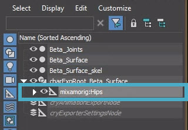
Hipbone selected - In the CryMax Utilities panel under Reorient Global Motion, assign the hipbone as the Global motion node by clicking on the <= button:
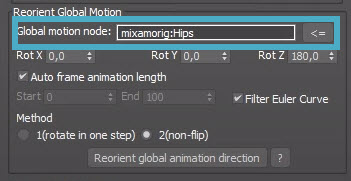
Assigning hipbone as Global motion node - The plugin needs to know how far and on which axis to rotate the animation, so make sure Reorient Global Motion → Rot Z is set to 180.0.
- Click on Reorient global motion direction.
The animation will now play in the right direction, but the root bone is not moving along with the animation. This means every time the animation loops, the character will be reset to its original position. To translate the movement of the pelvis to the root motion so it can move along, under Extract Pelvis Motion assign the hipbone under From and the root bone under To:
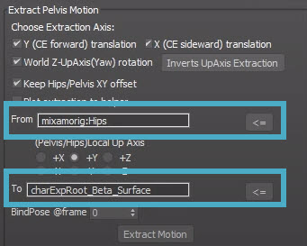
Extracting pelvis motionIf you don't want the camera to move along with the hipbone, e.g. roll around when the character is rolling on the ground, keep all the axes selected in Choose Extraction Axis.Click Extract Motion.
- Export the file by going to File → Export → Export...
When the FBX Export window opens, make sure Animation is selected.
If your character has facial deformations, make sure Animation → Deformations is selected as well.
Because characters usually have more than one animation, the whole scene would need to be reset for every animation and you would even have to close and re-open the plugin. Because you made an origin file, simply reload that file and you can add your new animation to it.
Reorienting Animation Batches
If you have a large number of animations, there is a quick way to reorient all of them without having to go through the whole process for every single animation.
- If needed, reset the scene and re-open the plugin.
- Instead of clicking on Anim, choose AnimBatch.
- In the folder that contains your T-Pose file, create a subfolder called Animations and put all your animations in it. In this Animations folder, create a folder called Output.
- For Max Rig File (BindPose) select the origin file.
- For Import FBX Anims Folder, select the folder that has all your animations in it, so the Animations folder.
- For Hip/Pelvis bone name, make sure it contains the exact name of the hipbone. In the images above, Mixamo was used, so the name of the hipbone would be Mixamorig:Hips.
- Next to skin/chr node name, click on the = *_skel button and select the skin .chr node name. The plugin should automatically find this node name. Select it and click OK. The plugin should now automatically recognize the skinned file in your origin 3dsMax file.
- Under Motion Extraction, make sure that Rate Z is set to 180.0.
Under Extract Global motion to root node, select all directions if you want the camera to not follow the character root bone if the character is for example rolling on the ground.
At the moment of writing, there is a small bug in these options; the Forward (Y) and Sideward (X) directions are flipped, so if you want the camera to follow the character root bone when the character is moving forward, deselect Sideward (X).
Under Output Max Folder, select the Animations/Output folder you created earlier in step 3 and click OK.
- Click Run Animation batching. This will now reorient all the animations in the Animations folder and save it as an .fbx file and .i_caf file.